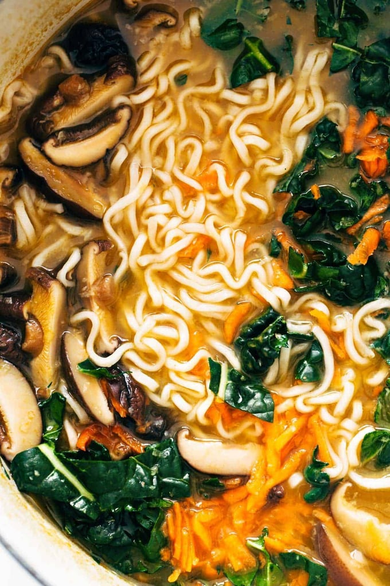

Ramen Recipie

Description
Fresh vegetables? Quick and easy homemade broth? A soft-boiled egg and a pile of our favorite curly-cue packaged ramen noodles that remind us of college? That’s this homemade ramen
Ingredients
- Ramen noodles
- Garlic and ginger
- Broth (Chicken or Veg)
- Dried shiitake mushrooms
- Veggies like carrots or kale
- All your favorite toppings like panko, egg, chili oil, etc.
Steps
- Stir-Fry Aromatics: Garlic and ginger, what a delicious duo. This is where the flavor is, friends.
- Make Your (Easy!) Broth: Add some chicken broth and dried shiitake mushrooms for some umami punch.
- Add Noodles: Cook your noodles right in the broth with some scallions (more flavor, please!).
- Add Veg: Thinly sliced kale, shredded carrots, whatever you’d like! Cook until just tender.
- Top It Off: Add some crunchy panko crumbs, a soft-boiled egg, chili oil, hot sauce, sesame oil, and/or soy sauce, whatever your heart desires.
Home